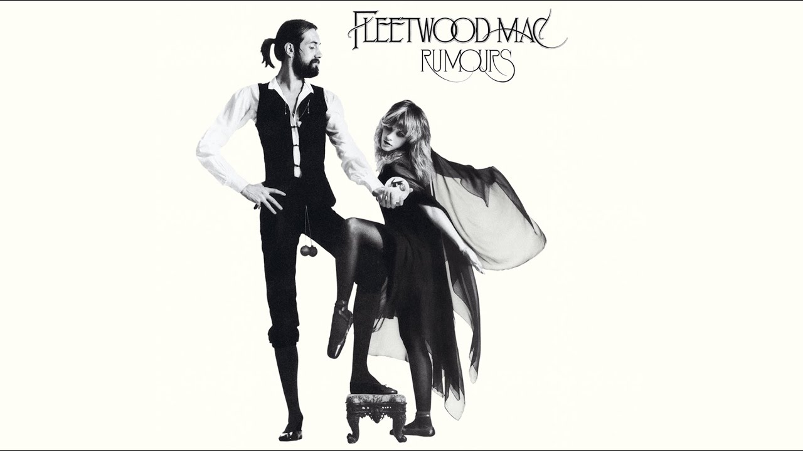
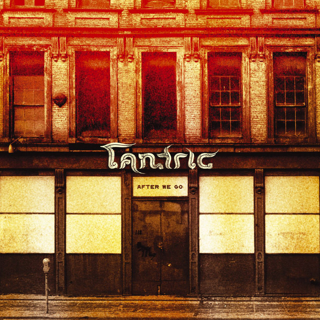
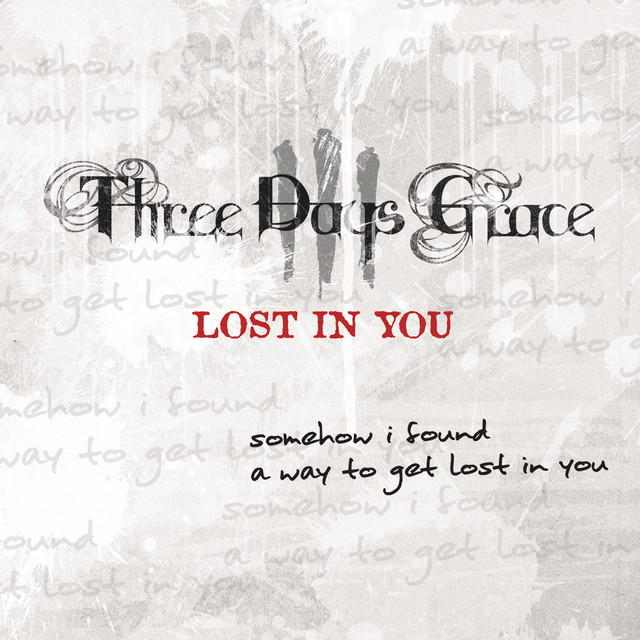
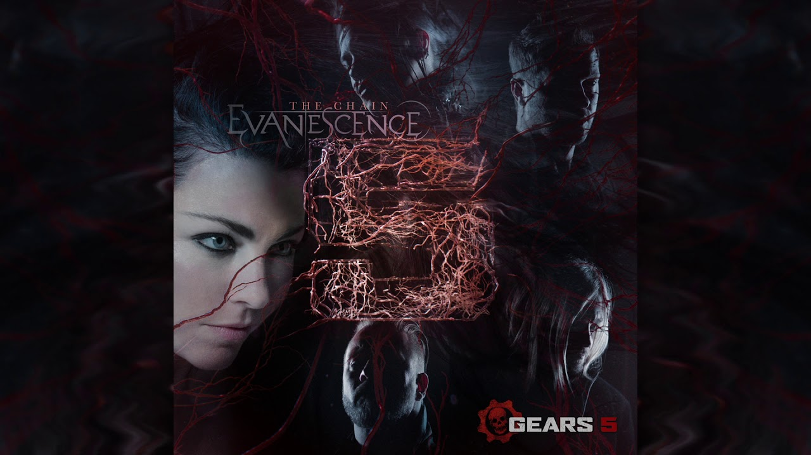

Literary Analysis of "The Chain"
Introduction:
I’ve chosen to write my Closed Reading Essay over Fleetwood Mac's song “The Chain†(1977) and the various covers of it released from then to present day. This essay will be an analysis and examination of the lyrics and context behind them for the original 1977 release by Fleetwood Mac as well as the different cover versions released by Tantric, Three Days Grace, Evanescence, and CHINCHILLA. I believe that each version of the song offers a unique way that the lyrics can be interpreted and understood. Within the different sections of the essay there will also be connections made with the literary concepts of diction, tone, and the sound to better describe my thoughts behind each version and give my reasoning for each.
The Original Song by Fleetwood Mac:

Fleetwood Mac's “The Chain†is truly a classic from the ‘70s. This is evidenced by the number of different musicians that choose to make a cover version from it. (There where a lot more covers than I knew about before starting my research!) While the song doesn’t have a great diversity in its lyrics, the words that are chosen are all packed with a deeper meaning. “Listen to the wind blow, watch the sun rise.†This phrase invites the audience into the vocalist’s point of view and offers them to spend a moment to contemplate on an emotional level, to “watch the sun rise.†The overall tone throughout the song is one of restrained anger that builds up slowly over the course of the song until the climax of the song with that iconic bassline in the final stanza. In the context of the original song, “The Chain†symbolizes the complex ties that bind people together even when trust has been shattered. The final refrain, “You will never break the chainâ€, feels both desperate in the fact that “you cannot break this Chain†and resolute in the sense that “this Chain cannot be brokenâ€. So, in a way the lyrics are both optimistic and pessimistic at the same time.
The Tantric Cover:

The Tantric cover leans more into hard-rock aesthetics by employing heavier guitar distortion and a slower, more brooding pace and rhythm. Their diction/lyrics remains mostly faithful to that of the original version, but how the lines are delivered alters their weight. Where Fleetwood Mac's version spoke with a collective anguish, Tantric’s vocalist exudes a sense of isolated bitterness. The tone shifts from tense unity to individual despair and gives off a more “darker and menacing†feeling. The sound plays an important role here with the use of heavier, dragging instrumentation creates a sense of being trapped or being dragged down. Like this version gives off the feeling of being “physically bound by Chains†that are holding you back. In this version of “The Chain†it feels less like a bond that one must endure and more like a burden one struggles to escape.
The Three Days Grace Cover:

I first encountered “The Chain†through Three Days Grace’s cover and grew up with that sound, so their take feels like the song’s “default†version to me and is the version that I am most familiar with. While so far, I’ve discussed how “The Chain†represents interpersonal bonds and struggles, I would like to propose the Three Days Grace cover is telling the story of an “intrapersonal struggle†instead. There is actually one major difference in the lyrics. At the last stanza the original had, “Chain! Keep us togetherâ€, alluding to some type of interpersonal relationship, but in the Three Days Grace version it is now, “Oh! Keep it together!â€, followed by echo voices of the vocalist declaring that they are “running through shadowsâ€. There isn’t an obvious declaration of there being another party. I’ve made the conclusion that the Three Days Grace version of the song is about some kind of personal struggle, like addiction, self-hatred, or feeling disillusioned with their current situation. In this version “The Chain†becomes something of a metaphoric, inescapable cycle that is doomed to repeat despite your aggressive fight against it. “I’m running in the shadows†is the vocalist describing their attempts to break free from these repeated cycles, but the final line “I’m still running in the shadows†concludes that there has been no success at breaking free from “The Chainâ€.
The Evanescence Cover:

The Evanescence cover brings in a gothic, more ethereal quality to “The Chain†emphasizing emotional vulnerability between the vocalist and the other party. Amy Lee's haunting vocals add layers of sorrow and mysticism to the song, making phrases like “run in the shadows†and “damn your love, damn your lies†radiate with a wailing, ghostly sadness rather than a fiery direct accusation or bottled up anger. The tone with this cover becomes mournful and tragic, shifting the focus from some sort of betrayal to focus on the inevitable loss of that relationship. The sound design in this version emphasizes a lot of echo and reverb that creates an atmospheric feeling of distance and longing. Evanescence transforms “The Chain†into a symbol of doomed attachment rather than that of trying to preserve a connection or attempting to break free from one.
The CHINCHILLA Cover:
The CHINCHILLA cover offers one of the most radical reinterpretations of “The Chainâ€. The tone of this version has a strong, youthful, fierce, and almost rebellious energy to it. The vocalist’s diction is delivered with assertiveness, but she bends a lot of the spoken syllables of the words and the pacing of the music to emphasize this “youthful rebellion†feeling that breaks away from the previous norms from the original song and the cover versions that have already been discussed. The tone is fiery and triumphant, a sharp contrast to the fatalism of Fleetwood Mac's version and is meant to focus on one’s agency rather than one’s victimhood. Through the fusion of pop-rock and punk influences the soundscape becomes brisker and more electric, pushing forward with momentum rather than dwelling on the past. In CHINCHILLA's version of the song, “The Chain†is not something that binds unwilling participants together, but it is something that is meant to be shattered in the pursuit for liberation.
Citations:
Covach, John.
“Popular Music and the Concept of Cover Versions.†Journal of Musicology, vol. 17, no. 1, 1999, pp. 76-80.
Plasketes, George.
“Re-flections on the Cover Age: A Collage of Continuous Coverage in Popular Music.†Popular Music and Society, vol. 28, no. 2, 2005, pp. 157-176.
Fleetwood Mac. “The Chain.â€
Rumours, Warner Bros., 1977.
Tantric. “The Chain.â€
After We Go, Maverick, 2004.
Three Days Grace. “The Chain.†Single Release, 2011.
Evanescence. “The Chain.â€
Gears 5 Soundtrack, BMG, 2019.
CHINCHILLA. “The Chain.†Single Release, 2024.